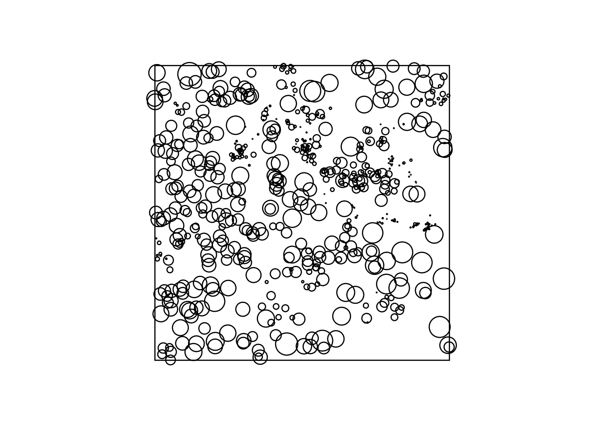
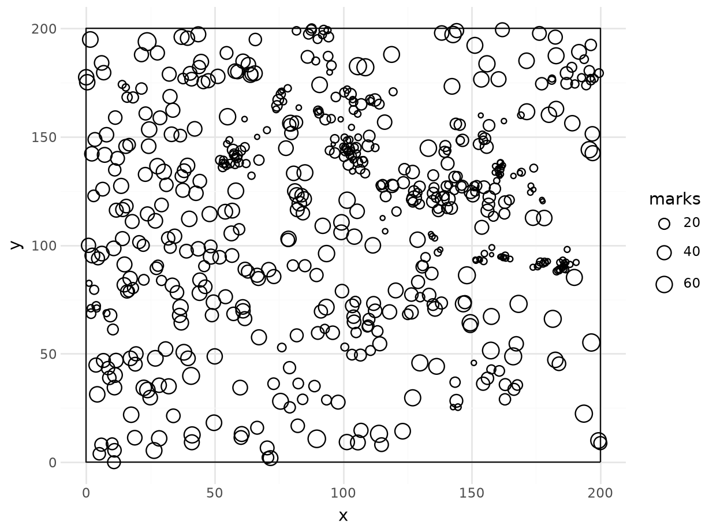
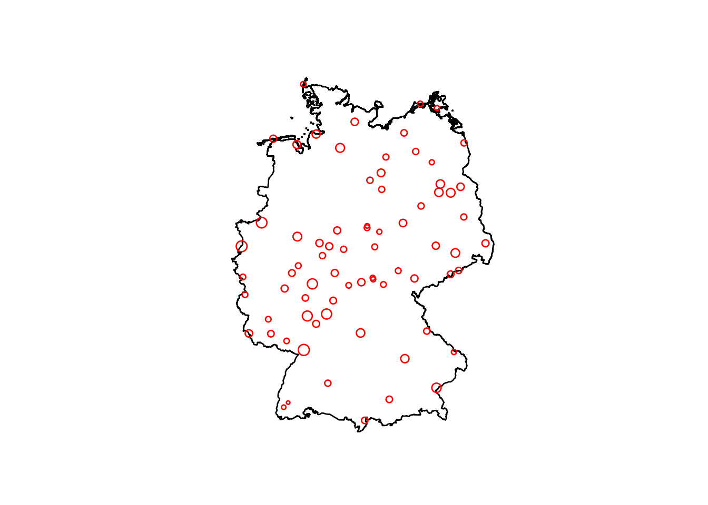

import numpy as npimport pandas as pdimport geopandas as gpdimport shapelyimport matplotlib.pyplot as pltfrom matplotlib.patches import Rectanglefrom plotnine import ggplot, aes, geom_map, geom_point, theme_minimal# the longleaf data from spatstat: tree locations in a 200 x 200 m window,# marks are tree diameters (exported from R to data/longleaf.csv)ll = pd.read_csv("data/longleaf.csv")box = gpd.GeoDataFrame(geometry=[shapely.box(0, 0, 200, 200)])# matplotlib: open circles, size proportional to the marksfig, ax = plt.subplots()ax.add_patch(Rectangle((0, 0), 200, 200, fill=False))ax.scatter(ll.x, ll.y, s=(20* ll.marks / ll.marks.max()) **2, facecolors="none", edgecolors="black")ax.set_aspect("equal")ax.set_axis_off()plt.show()

# plotnine, the ggplot2 equivalent: open circles with geom_point (shape="o")( ggplot()+ geom_map(box, fill=None)+ geom_point(aes(x="x", y="y", size="marks"), data=ll, shape="o", fill="none")+ theme_minimal()).show()

Exercise 11.2
Convert the sample locations of the NO\(_2\) data used in Chapter 12 to a ppp object, with a proper window.
no2 = pd.read_csv("data/no2_stations.csv") # from the gstat R packageno2_sf = gpd.GeoDataFrame( no2[["NO2"]], geometry=gpd.points_from_xy(no2.station_longitude_deg, no2.station_latitude_deg), crs="OGC:CRS84").to_crs("EPSG:32632")de = gpd.read_file("data/de_nuts1.gpkg").to_crs("EPSG:32632") # from edzer/sdsr# observation window: union of the states; no Python equivalent of ppp exists# in the packages used here, so we keep window, locations and marks togetherwin = de.geometry.union_all()fig, ax = plt.subplots()gpd.GeoSeries([win]).plot(ax=ax, facecolor="none", edgecolor="black")no2_sf.plot(ax=ax, markersize=no2_sf.NO2 *3, facecolor="none", edgecolor="red")ax.set_axis_off()plt.show()

Alternatively, the ppp object can be created stepwise:
st_union(st_geometry(de))|>as.owin()->wst_geometry(no2.sf)|>as.ppp(W =w)->p# requires sf 1.0-9marks(p)=no2.sf$NO2p# Marked planar point pattern: 74 points# marks are numeric, of storage type 'double'# window: polygonal boundary# enclosing rectangle: [280741.3, 921330.5] x [5235822, 6101239] # units